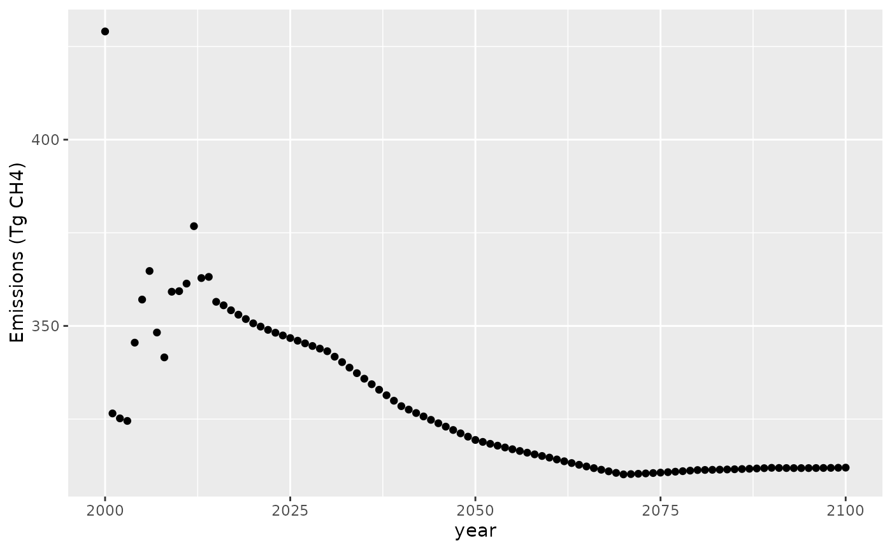

Solving for an emissions pathway
Robert Link
2018-10-17
Source:vignettes/articles/ex_hector_apply.Rmd
ex_hector_apply.RmdIntroduction
This tutorial shows how to use the Hector climate model in R to answer a simple science question. In this case, we’ll be looking at solving for the methane emissions required over time to produce a constant atmospheric methane concentration from 2000 through 2100.
To run this experiment, you will need to have the
nleqslv package installed. This package will be used to
generate successive guesses in the search for an emissions pathway that
produces the target concentration.
Setup
The nleqslv package requires us to supply a function
that takes a vector of inputs (i.e., emissions by year) and produces a
vector of outputs that are the discrepancies between the Hector output
and the target concentrations. In order to create such a function, we
will need to set up an interface to Hector. Since all of our
calculations are going to involve the years 2000 and beyond, we will run
up through 1999.
library(ggplot2)
library(hector)
hector_inifile <- file.path(system.file("input", package = "hector"), "hector_ssp245.ini")
hcore <- newcore(hector_inifile, suppresslogging = TRUE)
run(hcore, 1999)## Hector core: Unnamed Hector core
## Start date: 1745
## End date: 2300
## Current date: 1999
## Input file: /home/runner/work/_temp/Library/hector/input/hector_ssp245.iniOur target function will take a vector of emission values as input and return a vector of discrepancies between the Hector outputs and the target output. We’ll make the target concentration value 1820 ppbv CH (a bit higher than the year 2000 value in the baseline scenario).
f <- function(emiss) {
setvar(hcore, 2000:2100, EMISSIONS_CH4(), emiss, "Tg CH4")
reset(hcore, 1999)
run(hcore, 2100)
hout <- fetchvars(hcore, 2000:2100, CONCENTRATIONS_CH4())
## return the difference between the target of 1820 (constant) and the actual
hout$value - 1820
}Solve for the target emissions
To solve for the target emissions we just pass the target function to
nleqslv. We also need an initial guess for the emissions.
It doesn’t really matter what the guess is, so long as it isn’t
something so large that it will cause the model to fail outright. We
will use a constant 300 Tg
CH
as the initial guess.
x <- rep(300.0, times = 101) # 2000:2001 includes both endpoints
slv <- nleqslv::nleqslv(x, f, method = "Broyden")We should check to see if the algorithm really converged. The
discrepancy values from the last iteration are stored in the
fvec entry.
## [1] 1.116132e-08Results
The convergence looks okay, so let’s plot the results:
df <- data.frame(year = 2000:2100,
value = slv[["x"]])
ggplot(data = df, aes(year, value)) +
geom_point() +
labs(x = "year", y = "Emissions (Tg CH4)")
The concentration target of 1820 ppbv CH that we specified in 2000 is a bit of a jump from what was in the scenario we based our run on (the original was about 1811 ppbv), so we have a small spike in emissions in 2000. After that, the emissions settle down into something smoother.
Once we’re done with our Hector instance, we need to make sure to shut it down, so that the memory it is using will be freed.
shutdown(hcore)## Hector core (INACTIVE)Conclusion
This simple example shows the kind of thing you can do by combining
the Hector R interface with other packages available in R. It would be
easy enough to add emissions for other gasses or work in terms of
forcing or temperature. Likewise, instead of solving for an equilibrium
you could minimize or maximize some function of the emissions (using the
optim function), or run one of the many Monte Carlo
packages that are available in R.